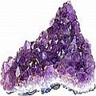

CuraDente.com
7 Maneiras fáceis de Apoiar esse Site
Como um site humanitário que ensina maneiras naturais e "Faça Você Mesmo" para se tornar independente de dentistas e que nada tem para vender, CuraDente.com solicita seu apoio. Se você acha que foi ajudado pelo conteúdo desse site, pense em dar algo em troca em um dos vários e fáceis meios seguintes...
1. Comprando da Amazon por meio dos meus links internacionais
Sem despesa extra alguma, você poderá comprar seus livros, CDs, DVDs e quaisquer outros produtos expostos na Amazon, ao acessar a Amazon por meio desses links:
Amazon Brasil | Amazon España | Amazon Italia | Amazon USA | Amazon Canada | Amazon UK | Amazon France | Amazon Deutschland
{kind=link}
Qualquer novo item comprado, novo ou usado (na mesma sessão online) por meio de um clique nesses links, contribui para financiar os custos desse sítio-web. Até 7,5 % dos Lucros Habilitados vão para CuraDente.com como comissão por encaminhamento, sem que você incorra em qualquer custo adicional. Para assegurar que a comissão sobre sua compra será realmente creditada a esse site, você necessita de iniciar sua compra no Amazon, a partir de um dos links acima.
Assim, quando decidir revisitar Amazon para futuras compras em data posterior, por favor volte aqui (você pode marcar essa página ou adicioná-la a seus favoritos) e efetuar sua compra a partir do(s) link(s) mostrado acima. Dessa maneira, www.CuraDente.com receberá crédito por sua visita e compras e você diretamente contribuirá para a continuação desse serviço gratuito de saúde holística. Mesmo quando usar um número gratuito de telefone do sítio de um comerciante para perguntar sobre um produto, quando decidir comprar, faça sua compra online, se puder (os pedidos realizados por telefone geralmente não permitem o acompanhamento e não dão crédito).
2. Espalhe a palavra
Conte a outros sobre www.CuraDente.com!
Uma das várias páginas que considero de particular importância (veja a lista abaixo sob o número 4), já que ela pode ajudar a aliviar tanto sofrimento de maneira tão fácil é a Minha melhor cura pessoal para dor de dente. Sabedora de que suicídios foram cometidos devido à dor de dente insuportável (até onde sei, especialmente em locais onde não há dentistas ou onde o sofredor não pode pagar um), é tão importante dar ciência a todos sobre um simples remédio que existe que próximo a alguém, em toda parte, qualquer um tem acesso e que parece funcionar em muitos ou, em verdade, na maioria dos casos! Como alguém comentou a mim "...vergonha para todo o mundo da medicina por não divulgar tão simples analgésico.” Pondere sobre ajudar a divulgar o que para muitas pessoas tem sido excelente notícia! Essa página (ou pequeno excerto dela contendo os pontos mais dignos de nota) também existe em algumas outras línguas.
3. Compartilhe suas histórias dentais
Tanto “boas” e “ruins”, de sucesso ou fracasso, essas histórias servirão para ajudar outros a se tornarem mais conscientes e fazer escolhas com mais informação, sobre o que pode ser o melhor ou o pior para sua situação individual, com relação a seus dentes e/ou gengivas. Por favor enviem seus testemunhos por meio de meu formulário de Contato. Grata!
4. Traduza ou revise
Se você for fluente em outras línguas, poderá ajudar a traduzir partes ou tudo de várias páginas importantes desse site ou revisar traduções automáticas. Presentemente considero as cinco páginas seguintes como sendo as mais importantes, em termos de ajuda à prevenção de sofrimento dentário:
- Minha melhor cura pessoal para dor de dente: salmoura morna & saquinhos de sal
- Perfuração & obturação de dentes: uma escolha imprudente? Sobre riscos, danos e perigos, como também inúmeras razões para se evitar o tratamento dentário convencional invasivo
- Bochechar e escovar os dentes com o açúcar xilitol pode parar a formação de cárie e curar periodontite/doença da gengiva
- Transporte do fluido dentinal - teoria revolucionária sobre resistência natural à cárie e cariogênese: Pesquisa dos Drs. Steinman & Leonora pressupõe a resistência do hospedeiro como mais importante que as bactérias como causa primordial de deterioração dentária.
- Urinoterapia para a cura de problemas com os dentes e gengivas.
Favor contatar-me se estiver interessado em contribuir dessa forma.
5. Publicidade
Você pode patrocinar indiretamente esse site, enquanto promove seu produto ou serviço por meio de um anúncio durante algum tempo. Favor enviar perguntas sobre termos de condições, por meio do meu formulário de contato.
6. Doações para CuraDente
Você pode fazer uma doação usando Paypal, cada dólar/euro ajuda e é recebido com gratidão. Informação mais detalhada
7. Energia Positiva
Por último, mas não menos importante, prece, reiki, etc. podem ser poderosos e sou grata por qualquer energia positive enviada a mim para melhorar minha sorte, bem-estar e experiência interior e exterior de amor, enquanto me empenho em servir ao mais alto bem de todos.